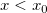
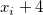
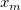
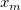
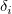
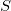
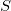
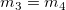

Weitere relevante Videos: Origin VT-0010 Interpolation
Weitere relevante Videos: Origin VT-0010 Interpolation
 Weitere relevante Videos: Origin VT-0010 Interpolation
Weitere relevante Videos: Origin VT-0010 Interpolation

Interpolation ist die Methode zum Schätzen und Erstellen neuer Werte aus einem diskreten Satz von bekannten Werten. Bei einem gegebenen X-Vektor interpoliert diese Funktion den Vektor auf Y-Basis für die Eingabekurve (XY-Bereich). Origin liefert vier Optionen für die Dateninterpolation, Linear, Kubische Spline, Kubische B-Spline und Akima-Spline.
Die lineare Interpolation ist die einfachste und schnellste Dateninterpolationsmethode. Bei der linearen Interpolation wird der arithmetische Mittelwert von zwei benachbarten Datenpunkten berechnet. Diese Methode ist für Situationen nützlich, in denen eine geringe Genauigkeit toleriert werden kann. Lineare Interpolation ist auch für extrem große Datensätze nützlich, da Berechnungen nicht zeit- oder rechenintensiv sind.
Die Verallgemeinerung der linearen Interpolation ist die polynomiale Interpolation. Polynomiale Interpolation erfordert eine viel höhere Rechenleistung als die lineare Interpolation. Außerdem schwankt die Anpassung stark, wenn die polynomiale Ordnung hoch ist. Diese Nachteile können vermieden werden, indem polynomiale Anpassungen mit niedriger Ordnung oder eine Spline-Interpolation verwendet wird.
Die Methode der kubischen Spline verwendet Polynomiale 3-ter Ordnung und führt die Datenanpassung stückweise aus. Bei der Spline-Interpolation entstehen weniger Fehler, und die Interpolierende ist glatter.
Ähnlich wie die Interpolation mit der kubischen Spline, passt auch die Interpolation mit der Kubischen B-Spline die Daten stückweise an, verwendet aber die Bezier-Splines 3-ter Ordnung, um die Daten zu approximieren. Mit kubischen B-Splines ist das genau Modellieren allgemeinerer Geometrieklassen möglich.
Die X-Funktion interp1 wird aufgerufen, um die Berechnung abzuschließen.
Hinweis: Um einheitliche, linear verteilte interpolierte Werte zu erzeugen, verwenden Sie den Menübefehl Interpolieren/Extrapolieren.
| Neu berechnen |
Bedienelemente zur Neuberechnung der Analyseergebnisse
Weitere Informationen finden Sie unter Analyseergebnisse neu berechnen. |
|---|---|
| Zu interpolierende X-Werte |
Die X-Spalte, für die eine Interpolation durchgeführt werden soll |
| Eingabe |
Die Referenzspalte(n) XY, mit deren Hilfe Y von einer bestimmten X-Spalte interpoliert wird. Mehrere XY-Spalten können gewählt werden. Wenn mehrere XY ausgewählt werden, wird jeder Satz von XY als Referenz verwendet, um die gleiche X-Spalte zu interpolieren und die entsprechende Y-Spalte und den Wert des Koeffizienten auszugeben. Hilfe zum Festlegen von Bereichen finden Sie hier: Eingabedaten festlegen |
| Methode |
Legt die Interpolationsmethode fest.
|
| Option Extrapolieren |
Wenn Teile des Datenbereichs, der durch Zu interpolierende X-Werte festgelegt wird, außerhalb des X-Bereichs liegt, der durch Eingabe festgelegt wird, werden diese Bereiche als der extrapolierte Bereich betrachtet, da die sich ergebenden Y-Werte für diese Teile aus der Extrapolation berechnet werden. Diese Option kann dann dazu verwendet werden festzulegen, wie die entsprechenden Y-Werte extrapoliert werden.
|
| Rand |
Die Grenzbedingung ist nur bei der Methode der kubischen Spline verfügbar.
|
| Glättungsfaktor |
Die Glättung ist nur bei der Methode der kubischen Spline verfügbar. |
| Ergebnis der Interpolation |
Die Y-Spalte(n), in der die interploierten Y-Werte ausgegeben werden. |
| Koeffizienten |
Die Koeffizienten für die Spline- oder B-Spline-Methode können ausgegeben und die entsprechende Spalte kann angegeben werden. |
Es ist eine Sequenz von eindeutigen Datenpaaren ( ,
,  ) gegeben, wobei . Es wird nach den interpolierten
) gegeben, wobei . Es wird nach den interpolierten  bei
bei  mit Hilfe der folgenden Methoden gesucht:
mit Hilfe der folgenden Methoden gesucht:
1. Lineare Interpolation (interp1q)
Für
Für
Für }}{(x_{i+1}-x_{i)}}\times (x-x_i)")
2. Kubische Spline (spline)
Origin verwendet die natürliche kubische Spline, um die Interpolation durchzuführen:
wobei:
 \left( x_{i+1}-x_i\right) ^2,D\equiv \frac 16(B^3-B)(x_{i+1}-x_i)^2")
Und kann erzeugt werden aus:
Für die Grenzpunkte setzen wir  und
und  gleich Null.
gleich Null.
3. Kubische B-Spline (bspline)
Führen Sie für  oder eine lineare Interpolation durch.
Für
bezeichnet die normierte kubische B-Spline, die durch die Knoten , , ...,  definiert wird.  bezeichnet den Koeffizienten der entsprechenden Funktion.
bezeichnet den Koeffizienten der entsprechenden Funktion.
Die Gesamtanzahl  dieser Knoten und ihrer Werte
dieser Knoten und ihrer Werte  , ...,
, ...,  wird automatisch durch die Funktion gewählt. Die Knoten
wird automatisch durch die Funktion gewählt. Die Knoten  , ..., sind Innenknoten; sie teilen das Approximationsintervall [, ] in
, ..., sind Innenknoten; sie teilen das Approximationsintervall [, ] in  Subintervalle. Die Koeffizienten
Subintervalle. Die Koeffizienten  , , ...,
, , ...,  werden dann als Lösung des folgenden begrenzten Minimierungsproblem bestimmt:
werden dann als Lösung des folgenden begrenzten Minimierungsproblem bestimmt:
Minimiert
unter der Bedingung
wobei  für den Diskontinuitätssprung in der Ableitung 3. Ordnung von beim Innenknoten steht.  bezeichnet das gewichtete Residuum , und S ist eine nicht negative Anzahl, die vom Anwender festgelegt wird.
bezeichnet das gewichtete Residuum , und S ist eine nicht negative Anzahl, die vom Anwender festgelegt wird.
Die Menge  kann als Maßstab der (des Mangels an) Glätte von betrachtet werden, während die Geschlossenheit der Anpassung mit Hilfe von
kann als Maßstab der (des Mangels an) Glätte von betrachtet werden, während die Geschlossenheit der Anpassung mit Hilfe von  gemessen wird. Mit Hilfe des Parameters , 'dem Glättungsfaktor', kann der Anwender dann die Balance zwischen diesen zwei (normalerweise in Konflikt stehenden) Eigenschaften steuern. Wenn zu groß ist, wird die Spline zu glatt und das Signal geht verloren (underfit); wenn zu klein ist, nimmt die Spline zu viel Rauschen auf (overfit). In Extremfällen gibt die Funktion eine interpolierende Spline (=0) zurück, ist auf Null gesetzt und das gewichtete kubische Polynomial der kleinsten Quadrate (=0) ist , wenn es auf sehr groß gesetzt ist. Versuche mit Werten zwischen diesen beiden Extremen sollte zu einem guten Kompromiss führen.
gemessen wird. Mit Hilfe des Parameters , 'dem Glättungsfaktor', kann der Anwender dann die Balance zwischen diesen zwei (normalerweise in Konflikt stehenden) Eigenschaften steuern. Wenn zu groß ist, wird die Spline zu glatt und das Signal geht verloren (underfit); wenn zu klein ist, nimmt die Spline zu viel Rauschen auf (overfit). In Extremfällen gibt die Funktion eine interpolierende Spline (=0) zurück, ist auf Null gesetzt und das gewichtete kubische Polynomial der kleinsten Quadrate (=0) ist , wenn es auf sehr groß gesetzt ist. Versuche mit Werten zwischen diesen beiden Extremen sollte zu einem guten Kompromiss führen.
4. Akima-Spline (akima)
Die Akima-Interpolationsmethode basiert auf einer stückweisen Funktion, die sich aus einer Reihe von Polynomialen (zumeist dritter Ordnung) zusammensetzt. Diese stückweise Funktion kann auf aufeinanderfolgende Intervalle der gegebenen XY-Punkte angewendet werden. Es kann angenommen werden, dass die Steigung der Eingabedatenzeichnung bei jedem gegebenen Punkt durch die XY-Koordinaten der 4 Nachbarpunkte und dem Punkt selbst bestimmt wird. Danach kann aus den Steigungen bei zwei verbundenen gegebenen Punkten und deren Koordinaten ein Polynomial dritter Ordnung berechnet werden, das die Intervallkurve zwischen diesen beiden Punkten darstellt. Die Interpolation wird dann basierend auf der Kombination der Polynomialen ausgeführt. Eine zusätzliche Schätzung wird gemacht, wenn die Polynomiale für die Endpunkte berechnet werden.
Zuerst wird die Kurvensteigung  bei einem gegebenen Punkt berechnet. Für einen gegebenen Punkt (Punkt 3) gibt es fünf Datenpunkte 1, 2, 3, 4, 5.
bei einem gegebenen Punkt berechnet. Für einen gegebenen Punkt (Punkt 3) gibt es fünf Datenpunkte 1, 2, 3, 4, 5.  sind jeweils die Steigungen der Liniensegmente
sind jeweils die Steigungen der Liniensegmente  und
und /(x_{i+1}-x_i)") . Die Kurvensteigung wird dann bestimmt von den folgenden Gleichungen unter unterschiedlichen Bedingungen:
. Die Kurvensteigung wird dann bestimmt von den folgenden Gleichungen unter unterschiedlichen Bedingungen:
Wenn  oder
oder  ,
,
/\left ( \left | m_{4} - m_{3} \right | + \left | m_{2} - m_{1} \right |\right )")
Wenn und ,
Steigungen für die beiden Endpunkte müssen an jedem Ende der Kurve geschätzt werden. Um sie zu schätzen, berechnen Sie die Steigung, indem Sie eine parabolische Kurve aus den drei angrenzenden Punkten interpolieren, d.h. für die Steigung des ersten Punkts können Sie eine parabolische Kurve aus den ersten drei Punkten interpolieren, und die Steigung des ersten Punkts kann durch die Ableitung der interpolierten Kurve berechnet werden.
Das Polynomial für ein Intervall ![[x_i, x_{i+1}]](../images/Interpolate_Extrapolate_Y_from_X/math-b9ecd49b3245fff5c8a6ccb8e4a645be.png "[x_i, x_{i+1}]") zwischen den beiden aufeinanderfolgenden Datenpunkten
zwischen den beiden aufeinanderfolgenden Datenpunkten ") und
und ") wird von den folgenden vier Bedingungen bestimmt:
wird von den folgenden vier Bedingungen bestimmt:


wobei  und
und  die Steigungen der beiden Punkte sind.
die Steigungen der beiden Punkte sind.
1. Michelle Schatzman. Numerical Analysis: A Mathematical Introduction, Chapters 4 and 6. Clarendon Press, Oxford (2002).
2. William H. Press, etc. Numerical Recipes in C++. 2nd Edition. Cambridge University Press (2002).
3. Nag C Library Function Document, nag_1d_spline_fit (e02bec).
4. Hiroshi Akima, Journal of the Association for Computing Machinery, Vol. 17, Nr. 4, (1970)